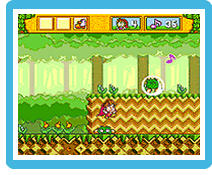

Un día el demonio Amon atacó el pueblo de Piccolo, robó los instrumentos mágicos y secuestró al hada Aeris. Milon, amigo del hada, se embarca en una aventura para rescatarla.
Tendrás que completar siete niveles repletos de monstruos antes de enfrentarte a Amon. En cada nivel hay varias rondas y la llave del castillo está oculta en la última ronda del nivel. Consíguela para poder enfrentarte al enemigo final y, si lo derrotas, poder acceder al siguiente nivel.
Tras derrotar a ciertos enemigos finales podrás recuperar algún instrumento mágico. Estos instrumentos te proporcionarán una serie de habilidades que te ayudarán a completar el juego. A partir del segundo nivel tendrás que encontrar cinco estrellas musicales en cada nivel para levantar la maldición que pesa sobre un instrumento mágico y para poder enfrentarte al enemigo final de ese nivel. Si aparece una estrella que parpadea en una ronda de la pantalla del mapa, significará que hay una estrella musical en esa ronda. Cuando hayas encontrado la estrella musical de la ronda, la estrella de la pantalla del mapa desaparecerá. Puedes comprobar las estrellas musicales que has encontrado en la pantalla de estado.
Ataques

Pisotón
Salta sobre un enemigo para aturdirlo temporalmente. Los enemigos serán inofensivos cuando estén aturdidos y los podrás utilizar para alcanzar lugares elevados.
Burbujas
Lanza una burbuja para atrapar a un enemigo durante unos instantes. Si quieres librarte del enemigo de una vez por todas, ¡empújalo mientras esté atrapado en la burbuja!